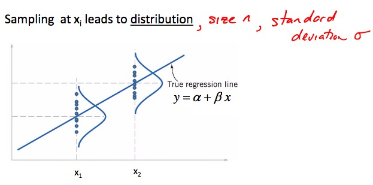
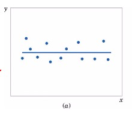
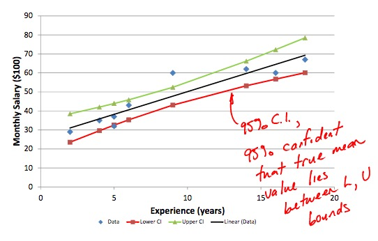
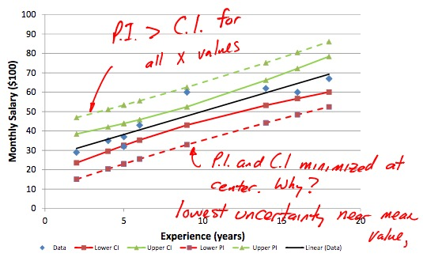

Lecture 28
Linear Regression
\[
\begin{align}
\hat{y} &= a + bx_i \\
e_i &= y_i - \hat{y_i}
\end{align}
\] where:
- \(y_i\): observed value
- \(\hat{y_i}\): predicted value
\[
\begin{align}
b &= \frac{S_{xy}}{S_{xx}} \\
&= \frac{ \sum_{i=1}^{n} (x_i - \overline{x})(y_i - \overline{y}) }{ \sum_{i=1}^{n} (x_i - \overline{x})^2 }
\end{align}
\] For hand calculations: \[
\begin{align}
S_{xy} &= \sum_{i=1}^{n} x_i y_i - \frac{ \sum x_i \sum y_i }{n} \\
S_{yy} &= \sum_{i=1}^{n} x_i^2 - \frac{\sum x_i \sum x_i}{n}
\end{align}
\] . \[
a = \overline{y} - b \overline{x}
\]
Statistical Model for Linear Regression

\[Y_i = \alpha + \beta x_i + \epsilon_i\]
Evaluating Linear Regression Fit
Conduct hypothesis test with:
\(H_0: \beta = 0\)
\(H_A: \beta \neq 0\)

Lecture 29
Standard Error of Estimators Approach
To test \(H_0\), use the following t-distribution \[
\begin{align}
T &= \frac{b - \beta}{S_e / \sqrt{S_{xx}}} \\
S_{xx} &= \sum_{i=1}^{n}(x_i - \overline{x})^2
\end{align}
\] where:
- \(S_{xx}\): sums of squares
- \(S_e\): standard error
\[
\begin{align}
S_e &= \sqrt{\hat{\sigma}^2} \\
\hat{\sigma}^2 &= \frac{ \sum_{i = 1}^n (y_i - (a + bx_i) )^2 }{n-2}
\end{align}
\]
Confidence Interval of a Point
A 95% confidence interval will contain the true parameter with a probability of 0.95. \[\pm t_{\alpha/2, n-2} \cdot S_e \sqrt{ \frac{1}{n} + \frac{ (x_0 - \overline{x})^2 }{S_{xx}} }\] \(x_0\) is the first (lowest) value 
Prediction Interval
What is the interval that will capture \(x\)% of future, unobserved variable at that point? \[\pm t_{\alpha/2, n-2} \cdot S_e \sqrt{ 1 + \frac{1}{n} + \frac{ (x_0 - \overline{x})^2 }{S_{xx}} }\] 
Lecture 30
ANOVA Approach
\[
\begin{align}
SS_T &= \sum_{i=1}^{n} (y_i - \overline{y})^2 \\
&= \underbrace{\sum_{i=1}^{n} (\hat{y_i} - \overline{y})^2}_{SS_R} + \underbrace{\sum_{i=1}^{n} (y_i - \hat{y_i})^2}_{SS_E}
\end{align}
\] where:
- \(SS_T\)(Total Sums of Squares): Error in prediction if \(\overline{y}\) is used. (\(=S_{yy}\))
- \(SS_R\)(Regression Sums of Squares): Portion of total error explained by regression model.
- \(SS_E\)(Error Sums of Squares): Error in prediciton if predictor is used.

Coefficient of Determination (\(r^2\))
\[
\begin{align}
R^2 &= \frac{SS_R}{SS_T} \\
&= \frac{SS_T - SS_E}{SS_T} \\
&= 1 - \frac{SS_E}{SS_T}
\end{align}
\] The closer \(R^2\) is to 1, the better the fit.
Sample Correlation Coefficient (\(r\))
\[
\begin{align}
r &= \frac{1}{n-1} \sum \frac{(x_i - \overline{x})}{S_x} \cdot \frac{(y_i - \overline{y})}{S_y} \\
&= \frac{ S_{xy} }{ \sqrt{S_{xx} S_{yy}} }
\end{align}
\]